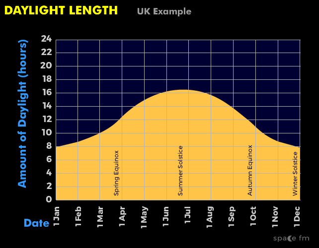
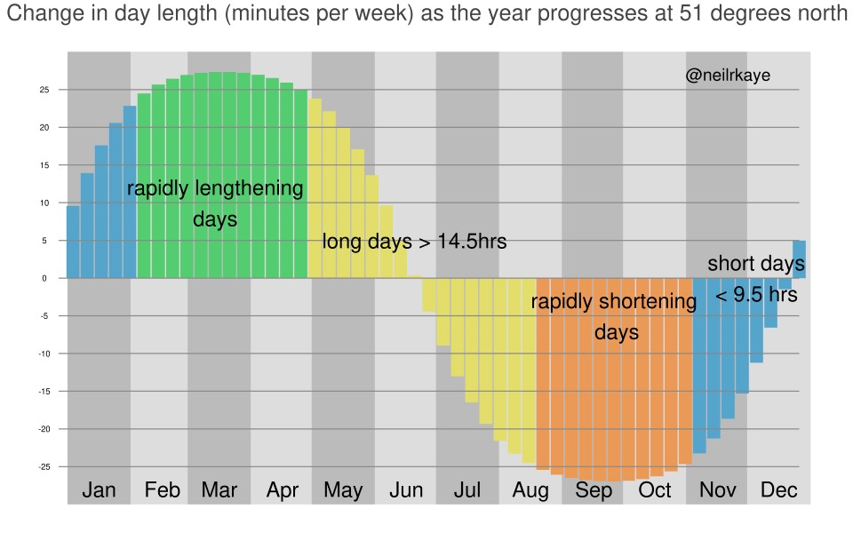

Digitix08's Testsite |
|
| Home | Search Login Games Articole parinti Pastila tehnică |
|
Pastila tehnica Ați auzit cu siguranță de sinusoidă, însă ce reprezintă poate fi o necunoscută pentru unii din noi. Că să înțelegem, v-aș propune să ne gândim puțin la una din multiplele aplicații din viața de zi de zi - evoluția duratei zilei pe parcursul unui an. Durata zilei variază după o sinusoidă - foarte lent înspre extreme și relativ dinamic în zonele de mijloc. Astfel, la solstiții avem diferențe de câteva secunde între zile, iar la echinocții acestea fiind de aprox 3 minute. Pe parcursul lunilor cu echinocții, durata zilei variază per total (30 zile) cu 1 h 30 min; în cazul celor cu solstiții variația e de... 2 minute! Prin urmare, percepția că iarna multe zile sunt scurte e reală, pentru că abia în martie simțim o lungire semnificativă a acestora. La fel, vara ne bucurăm de zile lungi până în septembrie când realizăm că de la 15 h 30 min la solstițiu ziua ajunge la 12 ore. Zile cu soare și bucurie! https://images.app.goo.gl/crwqRQfcbBeUovVK7  https://images.app.goo.gl/nq4HziPerQZifAbCA  |
|